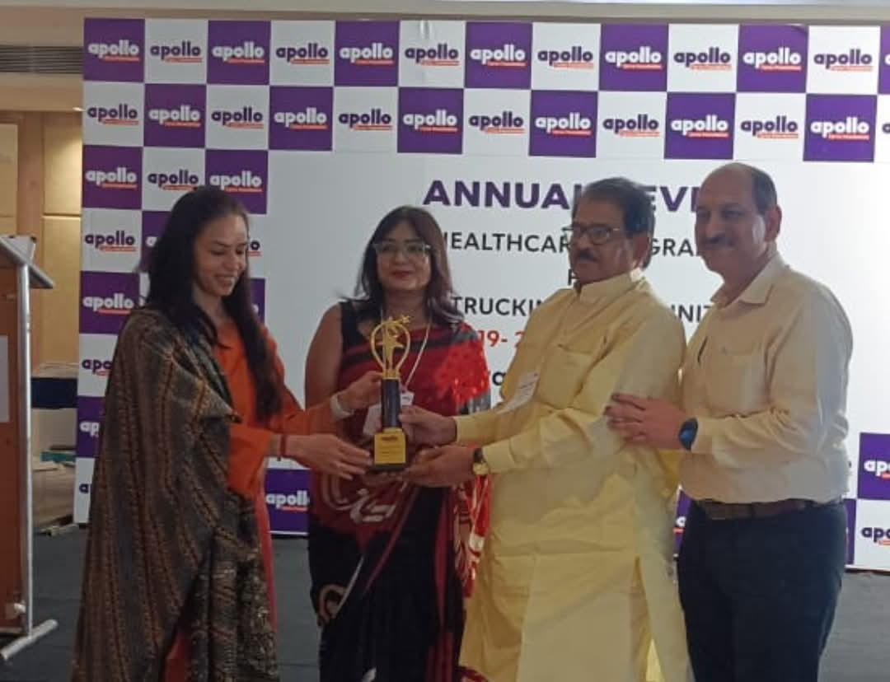
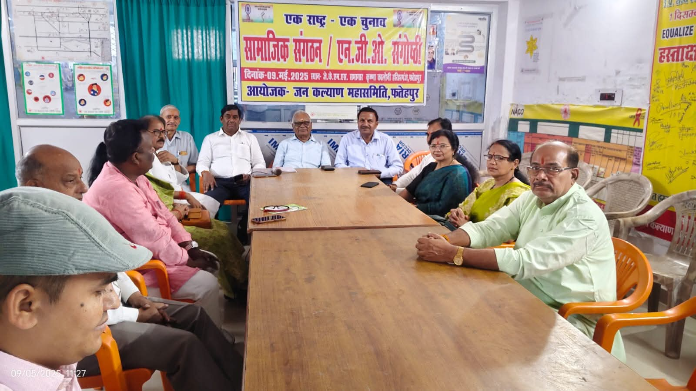
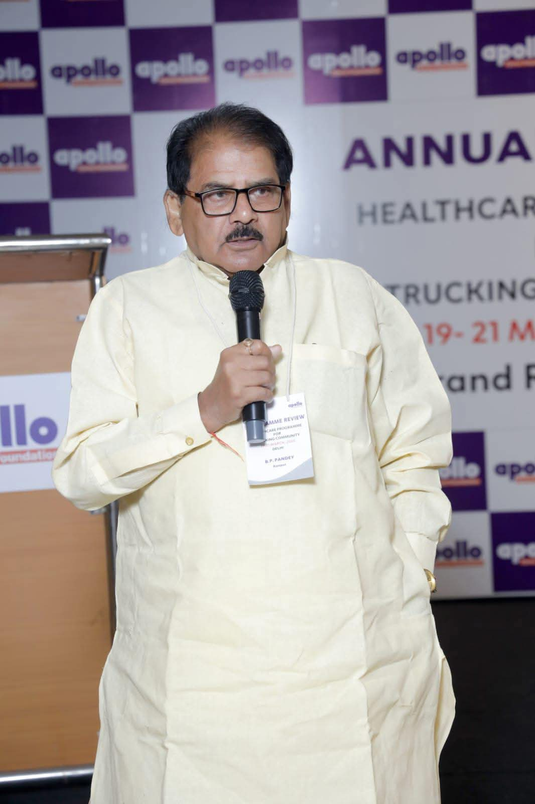
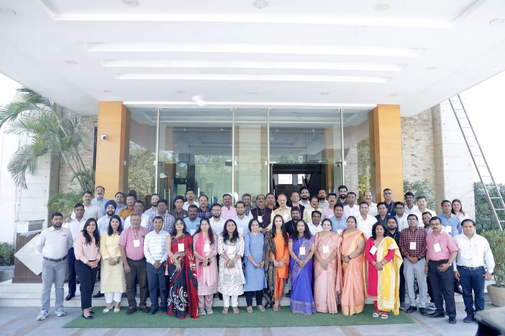
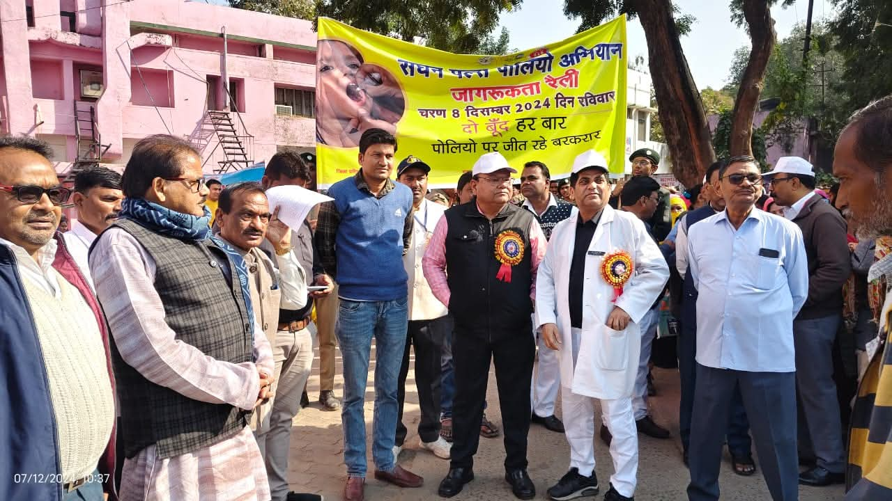
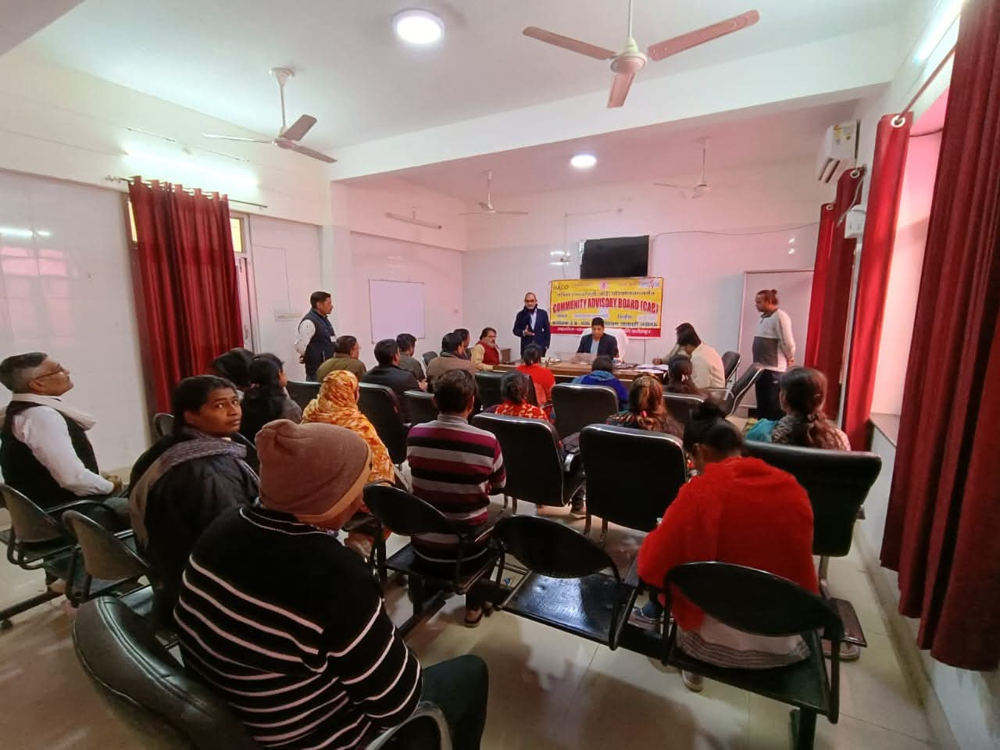
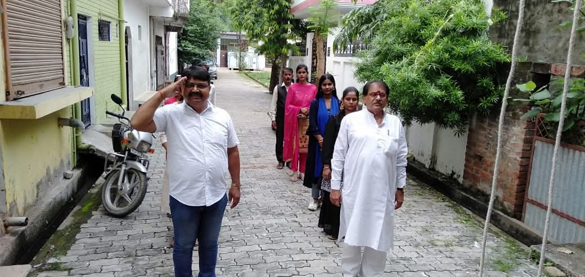
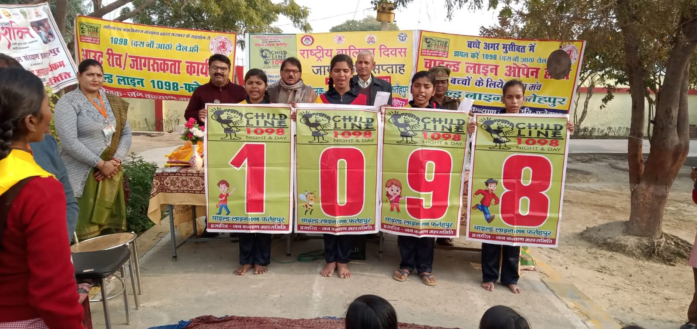
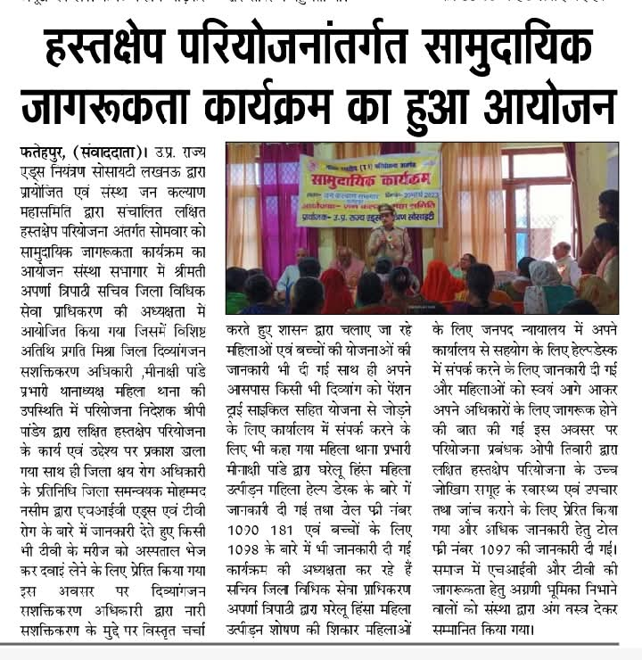

Field Gallery
Moments from our journey across communities










Serving the marginalized communities of Fatehpur and Varanasi since 1988
Jan Kalyan Maha Samiti (JKMS) stands as a beacon of hope and dedicated service for the underprivileged and marginalized sections of society in Uttar Pradesh, particularly in and around Fatehpur. Founded on the auspicious day of Republic Day, 26th January 1988, our organization has spent nearly four decades working tirelessly at the grassroots level[cite: 3]. With a firm belief in community empowerment and sustainable development, we have continuously strived to bridge the gap between government schemes and the last-mile beneficiaries who need them the most[cite: 3, 11].
In an exclusive medical collaboration with the renowned Hashmi Hospital, Kanpur, Jan Kalyan Maha Samiti runs an extensive corrective vision and eye screening initiative. To date, we have successfully facilitated over 600+ free cataract surgeries, effectively restoring sight and bringing critical healthcare solutions directly to high-risk groups, rural families, and long-route truckers. This comprehensive program also schedules massive distribution drives for high-utility spectacles and specialized hearing aids.
From humble beginnings as a small group of socially conscious individuals, JKMS has grown into a respected registered society committed to holistic community welfare[cite: 3]. Our journey has been shaped by compassion, resilience, and an unwavering focus on creating meaningful change in the lives of women, children, and vulnerable families[cite: 3, 7]. Over the years, we have expanded our reach while staying true to our core mission — empowering communities to become self-reliant and dignified[cite: 3, 11].
Our Vision: JKMS is a Non-Profit Non-Government organization established for equality and sustainable development for the community[cite: 9].
Our Mission: The organizations achieve their goals through peoples participation and want to prepare self-dependent society with the help of government programs and other donor agencies[cite: 11]. We aim to aware all the people for livelihood, education, health, HIV/AIDS, organic agriculture, Irrigation facilities, environment protection, etc[cite: 12].
Operating a 1800 sq. meter specialized facility situated at Lahartara Road, Maheshpur, Varanasi[cite: 2]. Serving 300 to 350 standing truckers daily from Kanpur, Lucknow, Delhi, Punjab, and Haryana[cite: 15].
Total OPD Footfall [cite: 23]
HIV Clinical Tests [cite: 27]
Diabetes Screened [cite: 23]
Hypertension Tests [cite: 29]
Vision Screenings [cite: 23]
Condoms Distributed [cite: 22, 23]
Conducted systemic mid & mass media events (street plays, puppet shows, infotainment setups) reaching out to 3,900 truckers for TB and 2,058 for general health metrics[cite: 20, 21]. Distributed 17,625 units of core IEC materials to drivers[cite: 21].
Executed a 15-day mass camp cycle and an extensive 100-Days TB Campaign mapping 465 presumptive vectors[cite: 56]. Tested 346 symptomatic individuals, isolating 21 infected cases and linking 19 immediately to state DOTS programs[cite: 57, 58].
Deployed 32 active Peer Educators (including transgender networks) completing 2 advanced training batches[cite: 21]. Run 6 highly specialized Integrated Camps and 45 strategic Satellite Health Camps across 7 target trans-docking sites[cite: 16, 65].
During our September 2024 TB-Free awareness campaign, field units identified Gulam Farid showcasing massive weight drops, evening pyrexia, and intensive sputum coughs[cite: 32, 36, 37]. Our clinic managed immediate intervention: completed multi-tier sugar & HIV mappings (Negative/Normal) [cite: 41], executed chest X-Rays confirming tubercular pathogenetic properties [cite: 42], and routed him safely to the CHC Vidyapith Block DOTS center on September 27, 2024[cite: 44, 45]. He is recovering rapidly under our direct follow-up tracking loops and nutritional support mechanics[cite: 49, 50].
Operating active surgical camp models in alliance with Hashmi Hospital, Kanpur. Delivered 600+ free cataract treatments alongside precision vision mapping loops.
Maternal health programs, skill development workshops, awareness campaigns, and economic empowerment initiatives for rural women[cite: 7].
Implementation of Childline services across Uttar Pradesh, ensuring safety, education, and holistic development of children[cite: 7].
Collaboration with government frameworks for land rights awareness, sodic land reclamation, and ravine restoration setups[cite: 6].
Your contributions directly fuel field clinics, vision surgeries, and child care initiatives.
Moments from our journey across communities









Office Address
346 Cha, Krishna Colony,
Near Gayatri Shaktipeeth,
Harihar Ganj, Fatehpur, Uttar Pradesh - 212601
Phone
+91 94154 94036